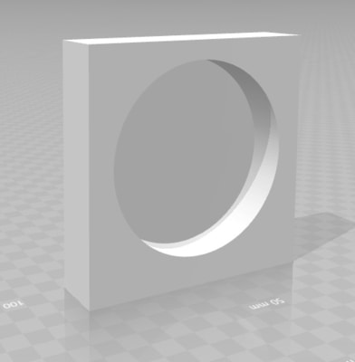
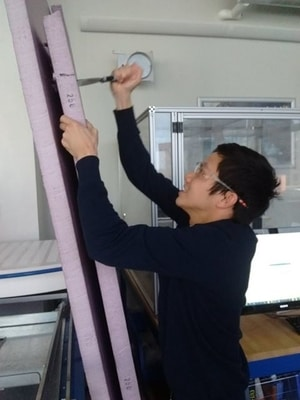
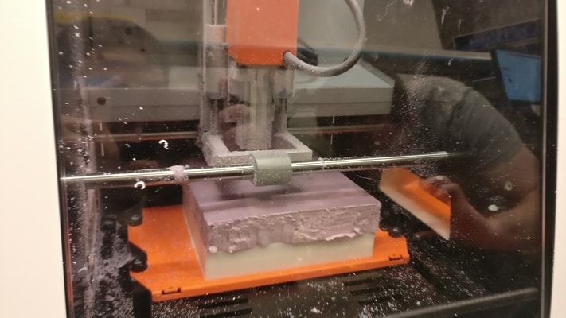
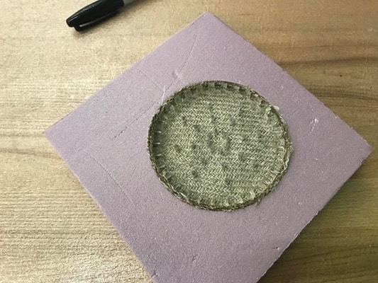
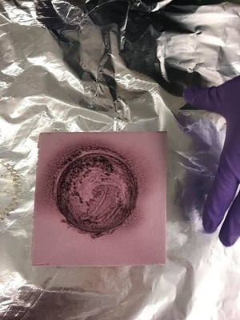
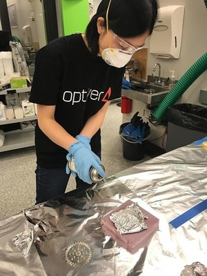
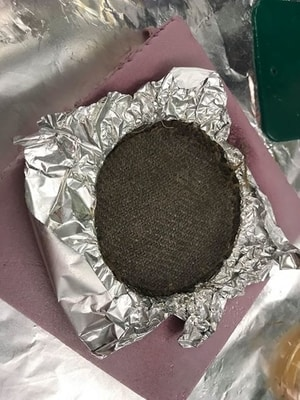
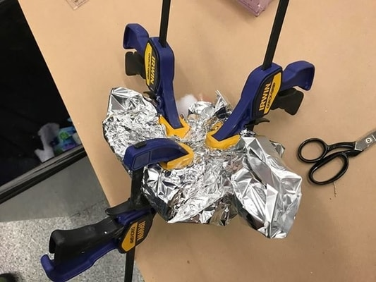
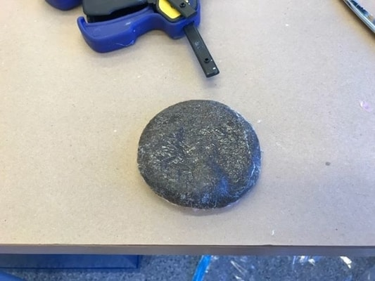

This week, I decided to make coasters with Alexandre, Max, and Natalie. The first step was to CAD the piece.
The design was very simple.
The next step was to mill it
 The vectorization process actually took a really long time. And the milling process took forever. We considered stopping it, but it was too late. We should have put the mill on a faster setting though.
We cut laser cut the burlap pieces into circles.
We forgot to put the aluminum foil over the mold before we sprayed it. Turns out this was really bad and it begin to eat away at the material. The mold actually increased in size. We continued on.
  We actually pressed them altogether the old-fashioned way.
It turned out okay.